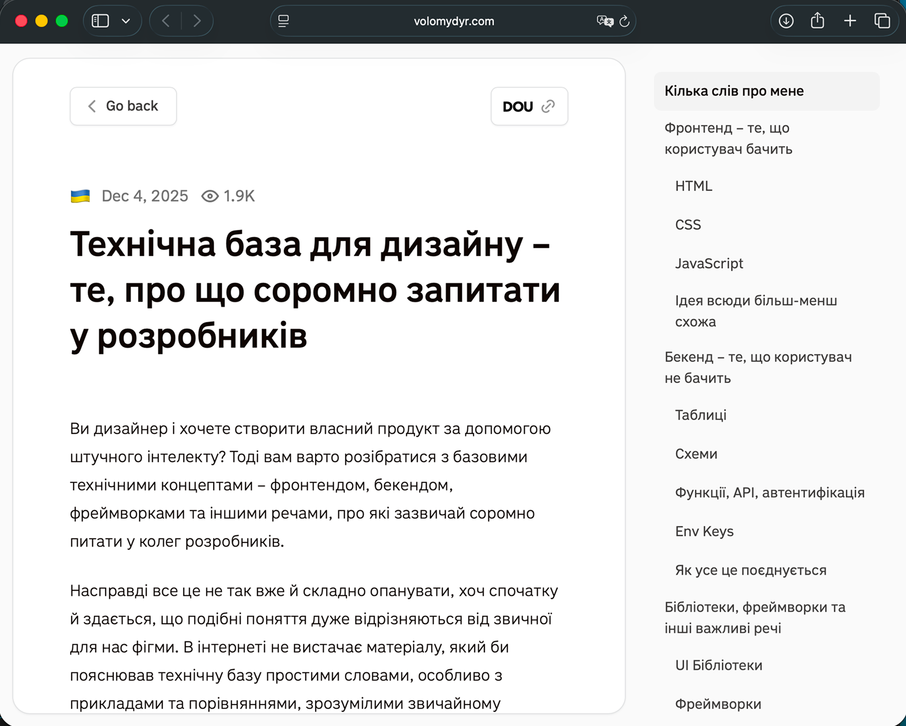
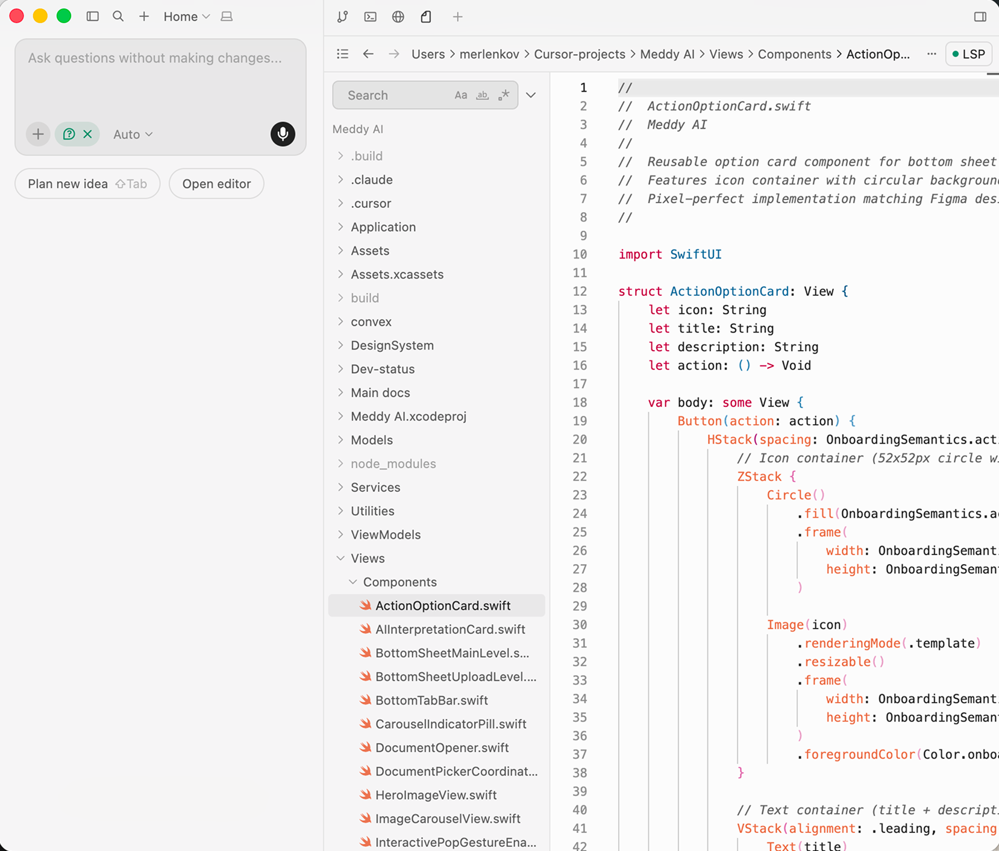
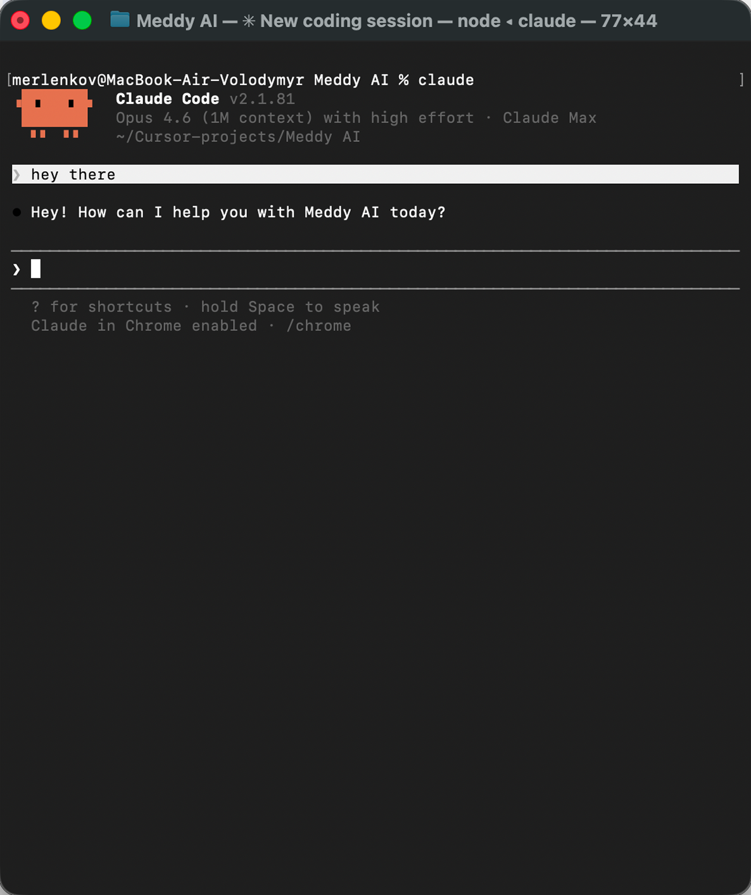
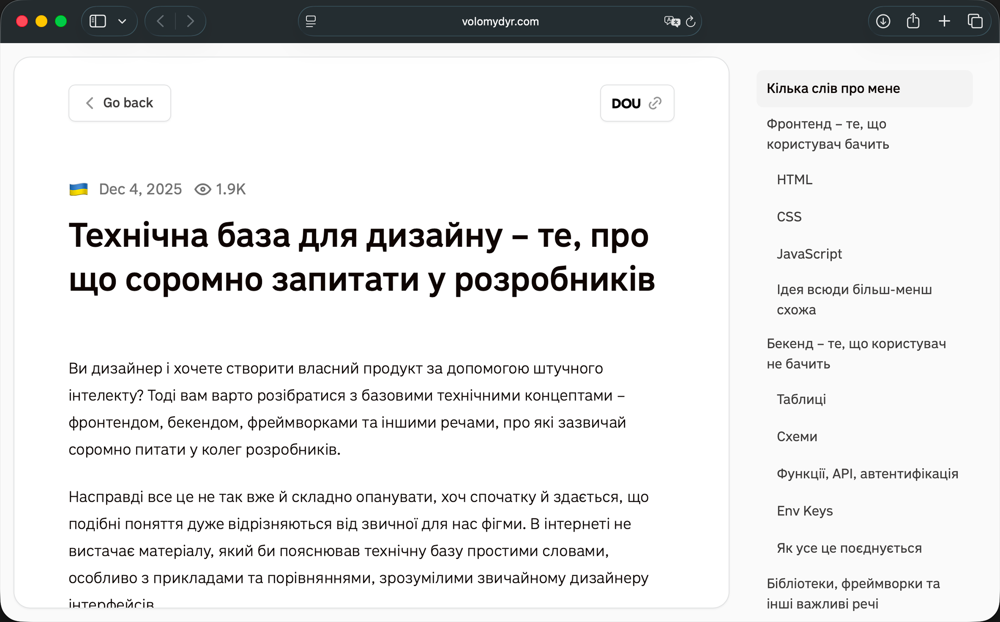
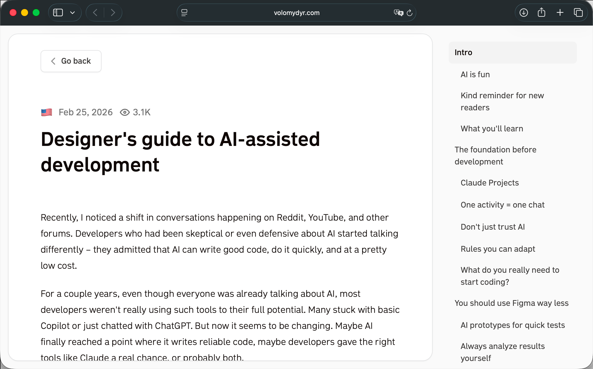
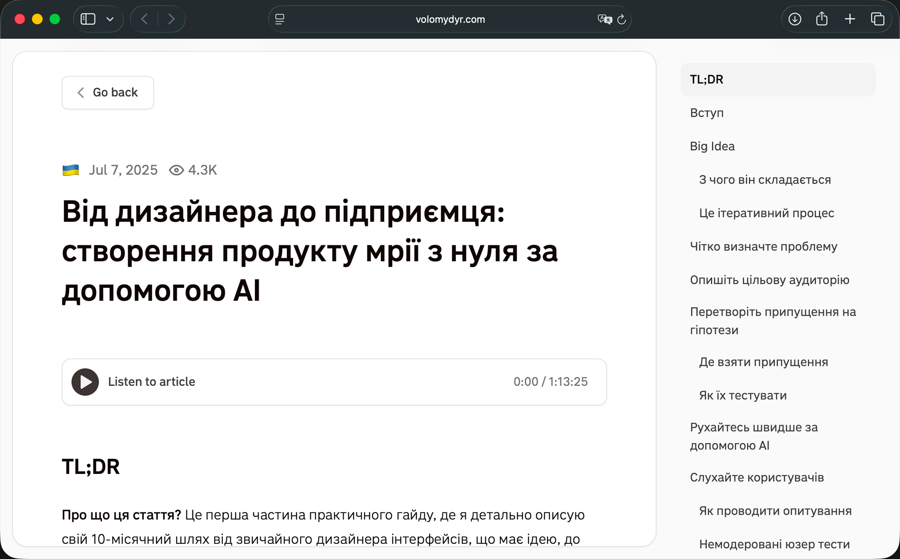

N-iX
Tools every designer should know
March 2026
Product Designer @Cieden & Way2B1
• LinkedIn blog
650K+ impressions
• DOU & Medium articles
46,000+ views
• Telegram community
1,100+ members
• Mentorship
KOLO x Mate academy
• Dysarium conference
2025 speaker
Rule 1
Rule 2
Brainstorm 3 different approaches to improve the notification system for our dashboard. Show pros and cons for each approach.
Hey, I need to rethink how notifications work in our dashboard. Right now everything looks the same – a billing warning looks identical to a critical server error, and people keep missing important stuff. Our users are IT admins managing a bunch of servers, so they need to spot urgent issues fast.
Can you brainstorm 3 different ways to fix this? For each one:
• should work with our current sidebar layout
• support both in-app and email notifications
• users should be able to configure which ones they get
For each idea walk me through how it would look visually, pros and cons, and if there's any possible development complexity.
Rule 3
Before you start, ask me 7–10 clarifying questions to understand my request as well as possible. For each question, suggest a few options to choose from.
Before you start, ask me 7–10 clarifying questions to understand my request as well as possible. For each question, suggest a few options to choose from.
Sure! Here are some questions before I start. I've added suggested options for each – feel free to pick one or tell me something different.
1. How should severity levels work?
a) Binary – just critical vs. non-critical
b) Three tiers – critical, warning, info
c) Custom – let admins define their own levels
2. How should notifications be grouped?
a) By server
b) By notification type
c) By time (most recent first)
3. What delivery method do you prefer?
a) Real-time push
b) Polling every few minutes
c) Both, depending on severity
4. Should users be able to customize notifications?
a) Yes – snooze, mute, and filter by type
b) Minimal – just mute specific types
c) No – same for everyone
5. What platform are we designing for?
a) Desktop only
b) Desktop + mobile responsive
c) Desktop + native mobile app
6. Should users be able to snooze or mute?
a) Yes – snooze for a set time + mute permanently
b) Just mute, no snooze
c) No – all notifications are always on
7. What happens when an admin clicks a notification?
a) Opens the affected server/resource directly
b) Opens a detail panel within the dashboard
c) Expands inline with more info
Rule 4
Here are my answers: 1b, 2a, 3c, 4a, 5b, 6a, 7a.
Now before you start making any changes, write a very detailed step-by-step implementation plan. I want to review and approve it first.
Here's a detailed plan. I won't change anything until you approve.
Phase 1 – Notification data model
Before touching any UI, I'll set up the data structure:
– Define three severity tiers:
• Critical – server down, security breach, disk full (>95%). Red accent, persistent until acknowledged.
• Warning – high CPU (>80%), cert expiring within 7 days. Amber accent, stays until resolved.
• Info – deployment completed, backup finished. Neutral accent, auto-dismisses after 24h.
– Each notification stores: severity, server reference, title, message, timestamp, read/snoozed/muted state, and a deep link URL.
Phase 2 – Notification feed panel
The main UI component admins interact with:
– Right-side drawer panel (480px on desktop, full-screen sheet on mobile)
– Header with title, filter dropdown, "Mark all read" action
– Notifications grouped under collapsible server headers, each showing server name, status dot, and unread count
– Within each group, sorted by severity first, then by time
– If a server has 5+ notifications, show first 3 with "Show more" link
Notification card layout:
– 3px left color bar matching severity (red / amber / neutral)
– Title (bold), message (2 lines max, truncated), relative timestamp
– Dismiss button and three-dot menu (snooze, mute server, mark read)
– Unread cards get slightly elevated background; read cards go flat
Phase 3 – Severity-based delivery
Routing logic based on your answers:
– Critical → immediate in-app toast (top-right, auto-dismiss 10s) + browser push with sound + mobile push with high priority
– Warning → in-app feed entry + silent browser push + normal-priority mobile push
– Info → in-app feed only, no push, no toast
Critical toasts stack up to 3 max. Each has a "View" button that goes straight to the server.
Phase 4 – Snooze, mute & filter controls
– Snooze: per-notification or per-server. Durations: 30min, 1h, 4h, until tomorrow, custom. Snoozed items move to a "Snoozed" section with countdown and unsnooze button. Critical snooze shows a confirmation dialog.
– Mute: per-server, stops all notifications. Muted servers show a speaker-off icon everywhere. Safety constraint: muting doesn't suppress critical alerts by default (toggle available in preferences).
– Filters: chips below the panel header – "All", "Critical", "Warning", "Info", "Unread only". Multiple can be active. State persists in local storage.
Phase 5 – Responsive layout
– Desktop (>1024px): 480px right drawer with subtle scrim overlay
– Tablet (768–1024px): 400px drawer, reduced card padding
– Mobile (<768px): full-screen bottom sheet, swipe-left to dismiss, swipe-right to snooze, sticky group headers during scroll, top banner for critical alerts
Phase 6 – Click-through navigation
Clicking a notification navigates to the affected server page. The relevant metric section auto-scrolls and highlights briefly. Notification auto-marks as read. On mobile, panel closes before navigating.
Phase 7 – Badge & unread management
– Bell icon in header shows red dot for info-only unreads, numbered badge for warning/critical
– Badge count = warning + critical only (info excluded to reduce noise)
– Badge pulses once when a new critical notification arrives
– Opening the panel does NOT auto-mark as read – only explicit actions do
Phase 8 – Preferences & polish
– Delivery rules table: severity tiers × channels (in-app, browser push, mobile push, email) with checkboxes
– Muted/snoozed servers lists with unmute/unsnooze controls
– "Do not disturb" mode with duration picker (suppresses everything except critical)
– Quiet hours option (e.g. 10pm–7am, critical only)
– Smooth 200ms transitions, skeleton loading states, empty state with "You're all caught up" message
Recommended order: Phase 1 → 2 → 4 → 7 → 3 → 6 → 5 → 8. I can deliver Phases 1–2–7 as a first working version, then layer on the rest. Let me know if you'd like to adjust anything.
Rule 5
Overall looks good, a few changes:
• Phase 2: skip the drawer, use a dropdown panel from the bell icon instead. Simpler and doesn't block the main view.
• Phase 3: no sound on browser push, our users will hate that.
• Phase 5: drop mobile for now, we'll do that in v2.
• Phase 8: skip the preferences page entirely for v1, just hardcode sensible defaults.
Everything else looks fine. Update the plan and let's go.
Updated plan with your feedback:
Phase 1 – Notification data model (unchanged)
Three severity tiers (critical, warning, info) with server reference, timestamps, read/snoozed/muted state, deep link URL.
Phase 2 – Notification dropdown panel (updated)
Replace the drawer with a dropdown panel anchored to the bell icon in the header. Max height 600px with scroll. Same grouping by server, same card layout with colored left borders. Opens on click, closes on click outside or Escape.
Phase 3 – Severity-based delivery (updated)
• Critical → in-app toast (top-right, auto-dismiss 10s) + silent browser push + high-priority mobile push
• Warning → in-app feed entry + silent browser push
• Info → in-app feed only
No sound on any notification. All browser push is silent.
Phase 4 – Snooze, mute & filter controls (unchanged)
Snooze per-notification or per-server (30min / 1h / 4h / until tomorrow). Mute per-server with safety constraint for critical alerts. Filter chips in the panel header.
Phase 5 – Click-through navigation (was Phase 6)
Clicking a notification opens the server detail page, auto-scrolls to the relevant metric section, marks as read.
Phase 6 – Badge & unread management (was Phase 7)
Bell icon badge shows count of warning + critical unreads only. Red dot for info-only unreads. Single pulse on new critical arrival. No auto-mark-as-read on panel open.
Removed: Phase 5 (mobile responsive) and Phase 8 (preferences page) – deferred to v2. Using hardcoded defaults: critical gets push + toast, warning gets silent push, info is feed-only.
Ready to start with Phase 1. Go?
Two use cases where it works
1. Brainstorming adjustments to an existing design
2. Prototyping for demos and handoff
Programming basics

Need a complex / mobile prototype? Use Claude
Cursor
Claude Code


Money wise Claude Code is a better deal
$20 of tokens per month
$20/month, refreshes every 5 hours
Figma → Claude Code → back to Figma round trip
Two ways to hand off designs
Prepare a Figma file
Do it yourself on GitHub
Skills – turn experience into reusable prompts
Global rules – store team standards
MCPs and plugins – integrate with other tools
Integration with Figma
Exports designs, imports it back
Claude performs actions in Figma
Raw designs → organized components with tokens and auto layouts
How to use AI for research
1
Analyze any results yourself first
2
Ask AI without sharing your thoughts
3
Merge both analyses together
1.Don't share what you wouldn't with a stranger
2.NDA? Ask permission or replace with mock data
3.Free plans often mean training on your data
volomydyr.com



The best time to start was two years ago
Telegram community